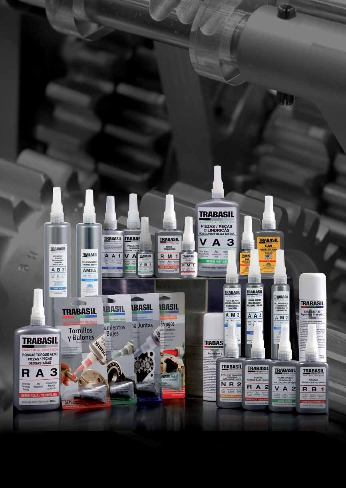
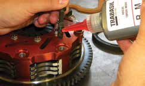
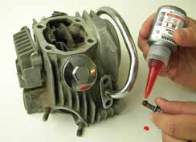
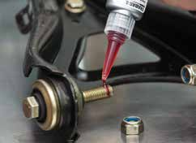
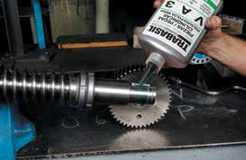

Trabas Anaeróbicas
Las trabas anaeróbicas previenen el desgaste en piezas mecánicas. Las superficies de las piezas son rugosas; el contacto entre las partes nunca es del 100%. Es sobre estas crestas que trabajan los choques y vibraciones, generando desgastes que provocan holguras. Las trabas no se contraen durante la cura, ocupan totalmente el espacio libre, impidiendo el desgaste.
Resisten temperaturas entre -50°C y +150°C (VA3 hasta +220°C). Valores obtenidos en probetas de acero dulce cilíndricas. Aprobado IGA N1573.
Evita aflojamientos, desgaste y oxidación de roscas. Transforma tuercas comunes en tuercas de seguridad.
| Producto | Presentación | T. Cura | Torque N.m | Holgura | Aplicación |
|---|---|---|---|---|---|
| RB1 | 50g - 300001 | P: 10-30 min Total: 6h |
Q: 8-14 R: 1.5-6 |
0.12 mm | Torque bajo. Tornillería pequeño diámetro. |
| RM1 | 6/15/50/250g 300057/03/04/05 |
P: 10-30 min Total: 6h |
Q: 11-20 R: 10-18 |
0.14 mm | Torque medio. Diámetro medio, desarme con herramientas comunes. |
| RA2 | 15/50/250g 300006/07/08 |
P: 5-20 min Total: 4h |
Q: 20-35 R: 15-30 |
0.22 mm | Torque alto. Espárragos o tornillería gran diámetro (+10mm). |
| RA3 | 6/15/50/250g 300058/09/10/11 |
P: 5-20 min Total: 6h |
Q: 30-45 R: 25-40 |
0.45 mm | Torque alto - Desgaste. Aprobado IGA N1573-01. |
Previene el desgaste en piezas nuevas, simplifica mecanizados. Permite eliminar anillos seeger, espinas, pasadores.
| Producto | Presentación | T. Cura | R. Axial MPa | Holgura | Aplicación |
|---|---|---|---|---|---|
| VB1 | 6/15/50g 300059/15/16 |
P: 15-30 min Total: 6h |
10-15 | 0.12 mm | Fácil desarme. Holgura baja. Piezas cilíndricas. |
| VA1 | 50/250g 300018/19 |
P: 10-30 min Total: 6h |
20-35 | 0.12 mm | Alta resistencia. Holgura mínima. |
| VA2 | 15/50/250g 300020/21/22 |
P: 5-30 min Total: 4h |
25-35 | 0.20 mm | Alta resistencia. Holgura media. |
| VA3 | 6/15/50/250g 300060/23/24/25 |
P: 10-30 min Total: 6h |
25-35 | 0.26 mm | Alta resistencia. Holgura máxima. Soporta hasta +220°C. |
Sellado efectivo de combustibles, lubricantes, fluidos hidráulicos, aire, agua y químicos. Sustituyen cinta PTFE.
| Producto | Presentación | T. Cura | Torque N.m | Holgura | Aplicación |
|---|---|---|---|---|---|
| AB3 | 250g - 300034 | P: 20-40 min Total: 20h |
Q: 4-7 R: 1-4 |
0.50 mm | Para grandes diámetros (hasta 4"). IGA N1573-03. |
| AM2 | 50/250g 300029/30 |
P: 20-40 min Total: 18h |
Q: 7-11 R: 4-8 |
0.30 mm | Uso general. Hidráulica y neumática. IGA N1573-02. |
| AM3 | 6/50/250g 300062/35/36/37 |
P: 100-130 min Total: 36h |
Q: 4-10 R: 1-6 |
0.50 mm | Sellador con PTFE. Conexiones hidráulicas/neumáticas. IGA N1573-04. |
| AA3 | 50/250g 300039/40 |
P: 15-30 min Total: 18h |
Q: 10-25 R: 11-25 |
0.50 mm | Presiones máximas. Sellador conexiones presión máxima. |
| GAS | 15/50g 300054/55 |
P: 10-30 min Total: 24h |
Aprobado IGA | — | Para instalaciones domiciliarias hasta 4 Bar. Sin solventes. |
Todos los productos anaeróbicos cumplen con las normas IGA (Instituto del Gas Argentino). Resistencia a temperatura: -50°C a +150°C (VA3 hasta +220°C).